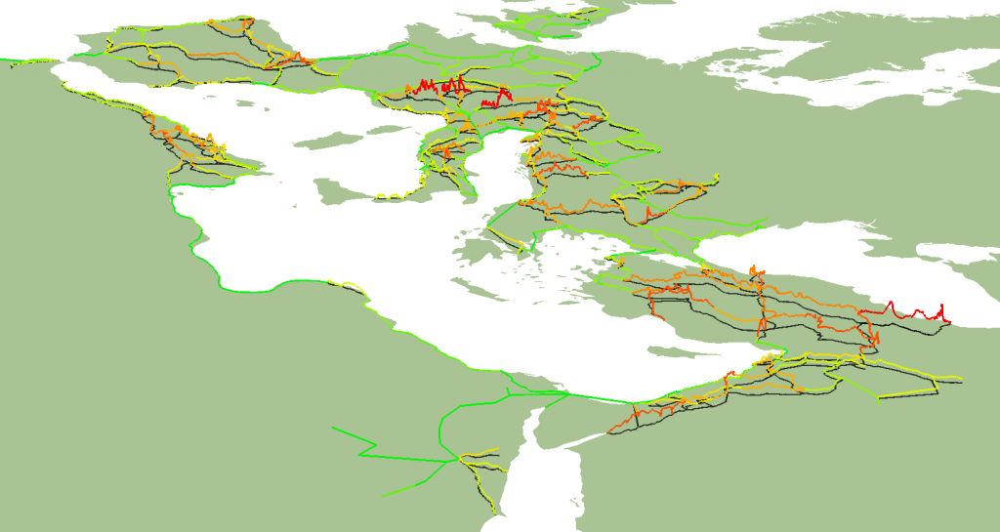
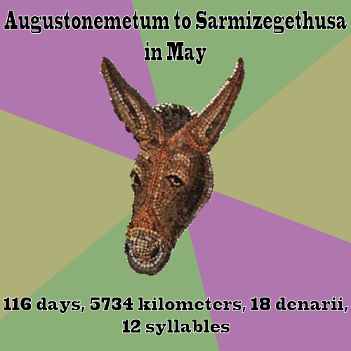

ORBIS: The Stanford Geospatial Network Model of the Roman World has been up and running for a week now and the response has been simply incredible. While we all expected it to be well-received, especially among the particular scholarly community for whom it was directed (historians and classicists interested in the structure of the Roman and other classical world systems) it’s hard to imagine we would have received quite the level of attention we already have. I jokingly said that I expected 5 million visitors the first day and that we’d all retire to the Seychelles by August–newly rich from our spin-off companies that take advantage of the untapped need for Imperial Roman Transportation Routefinding in everyday life. Stanford has that effect on you.The results, while not quite 5 million a day, are still a bit higher than one would expect for a scholarly work on an obscure subject. ORBIS includes fifty pages of text with dozens of footnotes and, in its narrative form, though benefiting from several full-color illustrations of described phenomena, is the kind of thing that is read, perhaps, a hundred times in a year. The site, however, has garnered much more attention than that, in just a week. By the numbers (mostly from Google Analytics):
- Over 9300 visitors, 1100 of which are return visitors
While averaging over a thousand visitors a day is an abject failure if you’re Smosh, I think we can all agree that this is a pretty exciting sign of interest in the results of digital humanities research. ORBIS was created for a scholarly audience, but one of the values of building models and presenting rich, interactive content is that it is more amenable to exploration, mashup and reuse by a wide variety of perhaps unintended users. Even with the map and dynamic cartogram hidden away in subtabs, surrounded by massive amounts of text dense with academic and/or technical jargon, ORBIS is proving to be popular.
Thanks to articles on a variety of international sites, it’s also proven popular beyond the United States. Croatia, with nearly a thousand visits, is in second place. Why Croatia? It’s followed, naturally, by Italy with 800 visits, Japan and the UK with 700 a piece, and a hundred other countries rounding out the list. And while the overwhelming majority of visitors are heading straight to the map and playing with it and then leaving, the PDF version of ORBIS has already been downloaded over 150 times.
- Over 1000 likes on Facebook
I had no idea that this would happen. We added a Like button at the last minute with little thought that Facebook would end up providing us with a fifth of all of our visitors. A story on Mashable sent another five hundred, the same number as sent via Twitter and the Japanese tumblr historyanddigital. The largest referrer other than Facebook, though, was mob.hr, which I’d never heard of but is apparently quite big in Croatia. The novelty of the site seems to straddle several categories, including that of gadget, game, popular history and web-based geospatial technology.
- Countless awesome tweets
I think it would be the highest form of vanity to topic model tweets and Facebook comments to find out just how much people like ORBIS. But an informal poll reveals that it is considered “awesome” by a not insignificant group including teachers, kids, classicists (faculty, grad and undergrad), digital humanities types, librarians and Croatians. This doesn’t surprise me, I think ORBIS is awesome, as well, but there’s going to come a stage after the Awesome stage that involves the general community becoming more aware of how digital representation of the past is problematic. Advancing algorithmic literacy is, in my mind, one of the key benefits of sophisticated, accessible digital models of humanities scholarship.
- One overused donkey
Seriously, there are horses in this game. Horses, carriages, entire armies and even boats. Why is it that everyone is riding donkeys everywhere? Is this some kind of meme?
